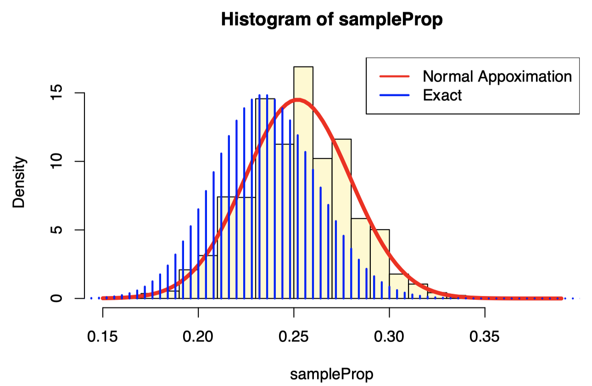
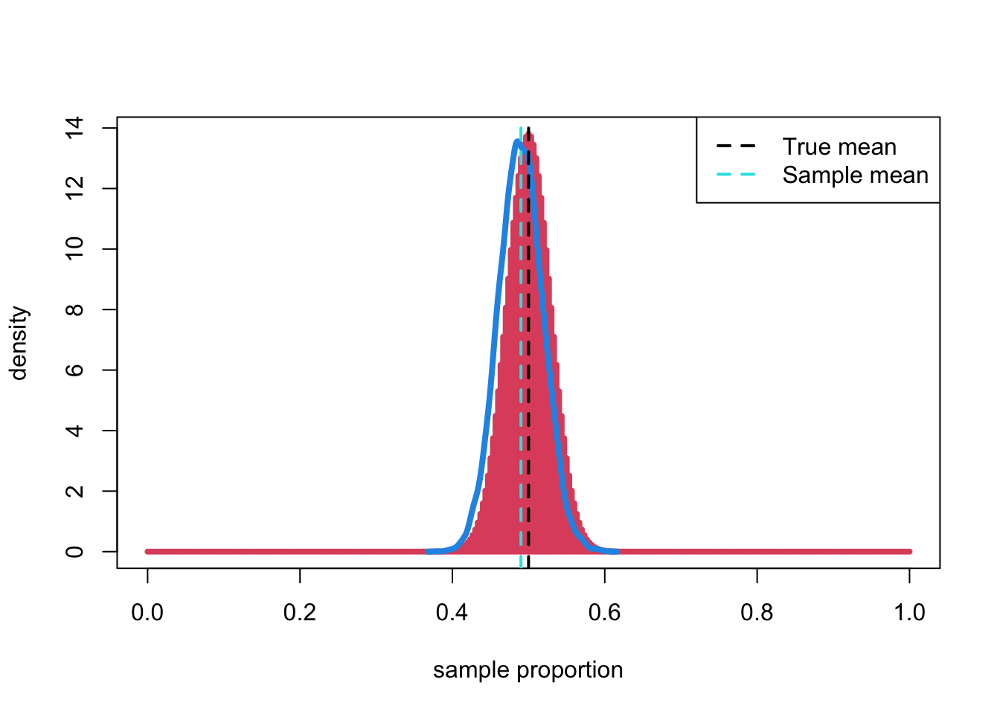
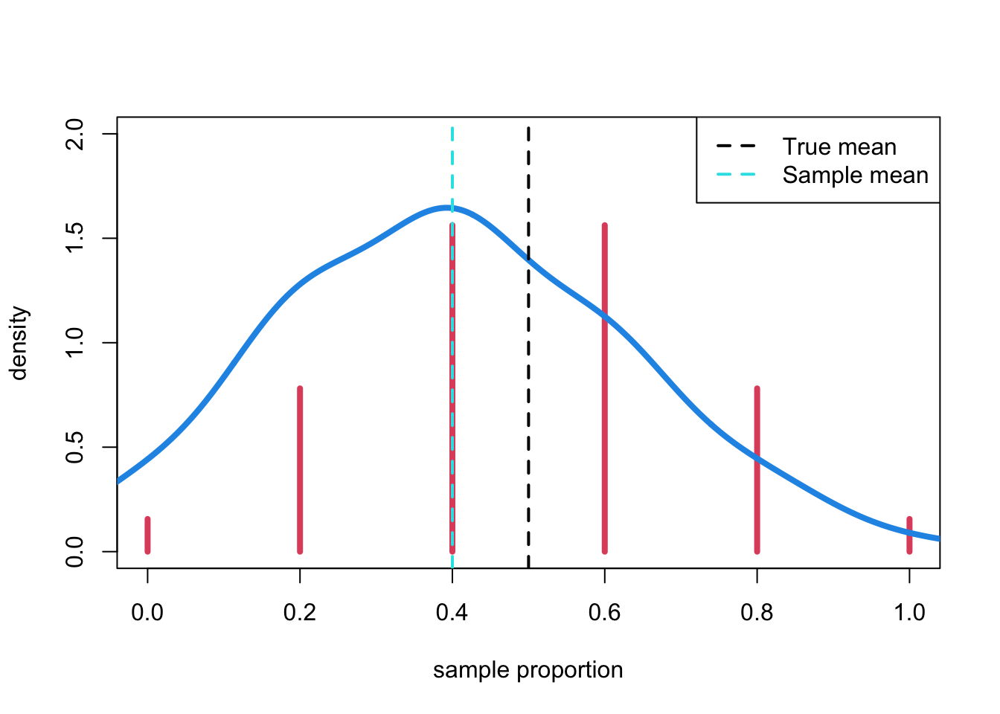

\[ \mathrm{N}\left(\pi, \sqrt{\frac{\pi(1-\pi)}{n}}\right) \]
Recall an example used in class. The US Census indicates that 35% of US residents are less than 25 years old. We will take a random sample 120 of Manhattan residents and determine the proportion of individuals who are less than 25 years old. The question of interest is whether there is there evidence that Manhattan has a different age distribution than US residents globally.
We will simulate a random sample from Manhattan. In our sample, we
will indicate a “success” (person under 25 years old) as an 1 and a 0
will represent an individual who is 25 years or older. The code below
saves the sample results in an vector called manhattanSamp.
Here is code for a random sample of size 250.
B <- 10000
n <- length(manhattanSamp)
sampleProp <- replicate(B, {
x <- sample(manhattanSamp, size = n, replace = TRUE)
mean(x)
})
hist(sampleProp, probability = TRUE, breaks=30, col="lemonchiffon")
curve(dnorm(x, mean = mean(manhattanSamp), sd = sd(manhattanSamp)/sqrt(n)), add=TRUE, col=2, lwd=4)
lines((0:250)/250,250*dbinom(0:250,250, 0.235), type="h", lwd=2, col=4)
legend("topright", c("Normal Appoximation", "Exact"), lty=1, col=c(2,4), lwd=2)
R:quantile(sampleProp, c(0.025, 0.975))## 2.5% 97.5%
## 0.2064321 0.3167708The variance of the bootstrap distribution is a good approximation of the variance of the sampling distribution.
\[ M S E[\hat{\theta}]=E\left[(\hat{\theta}-\theta)^{2}\right]=\operatorname{Var}(\hat{\theta})+\operatorname{Bias}(\hat{\theta})^{2} \]
\[ \widehat{M S E}[\hat{\theta}]=\frac{1}{B} \sum_{b=1}^{B}\left(\hat{\theta}^{*}-\hat{\theta}\right)^{2}=\operatorname{Var}\left(\hat{\theta}^{*}\right)+\operatorname{Bias}\left(\hat{\theta}^{*}\right)^{2} \]
R to compute an estimate of the MSE for a bootstrap
sample proportion.# MSE
sum((sampleProp - mean(manhattanSamp))^2)/B## [1] 0.0007955637The estimate of the MSE for a bootstrap sample proportion is 7.9556373^{-4}. So an estimate of the MSE for a bootstrap sample proportion is 0.001. The corresponding bias of the bootstrap estimator (to three decimal places) is 0.
n <- 10
(ps <- choose(2 * n -1, n))## [1] 92378In case of \(n\)=10, there are 9.2378^{4} possible samples.
n <- 20
(ps <- choose(2 * n -1, n))## [1] 68923264410In case of \(n\)=10, there are 6.8923264^{10} possible samples.
R: How the bootstrap distribution approximates the true
distribution with a large sample size, \(n\)=300 and a population proportion of
\(\pi\)=0.5.n <- 300
# Using the same original sample
y <- rbinom(300, 1, 0.5)
B <- 10000
boot <- replicate(B, {
s <- sample(y, size = n, replace = TRUE)
# Using the original sample
mean(s)
})
plot((0:300)/300,300*dbinom(0:300,300, 0.5), type="h", col = 2, lwd=4, xlab="sample proportion", ylab="density")
lines(density(boot), col=4, lwd=4)
abline(v = 0.5, lwd = 2, col = 1, lty = 2)
abline(v = mean(y), lwd = 2, lty = 2, col=5)
legend("topright", c("True mean", "Sample mean"), lty=2, col=c(1,5), lwd=2)
n <- 300
# Using the original sample
y <- rbinom(250, 1, 0.5)
B <- 10000
boot <- replicate(10, {
replicate(B, {
s <- sample(y, size = n, replace = TRUE)
# Using the original sample
mean(s)
})
})(sds <- apply(boot, 2, sd))## [1] 0.02939144 0.02890283 0.02882894 0.02890785 0.02866845 0.02900223
## [7] 0.02870043 0.02848080 0.02874674 0.02896233n <- 300
B <- 10000
boot2 <- replicate(10, {
# With different samples for each bootstrap
y <- rbinom(n, 1, 0.5)
replicate(B, {
s <- sample(y, size = n, replace = TRUE)
mean(s)
})
})(sds2 <- apply(boot2, 2, sd))## [1] 0.02862964 0.02832271 0.02899045 0.02888168 0.02848900 0.02901158
## [7] 0.02847996 0.02854243 0.02886581 0.02898566n <- 5
y <- rbinom(n, 1, 0.5)
B <- 10000
boot <- replicate(B, {
s <- sample(y, size = n, replace = TRUE)
mean(s)
})
plot((0:5)/5,5*dbinom(0:5,5, 0.5), type="h", col = 2, lwd=4, ylim = c(0, 2), xlab="sample proportion", ylab="density")
lines(density(boot, bw=.1), col=4, lwd=4)
abline(v = 0.5, lwd = 2, col = 1, lty = 2)
abline(v = mean(y), lwd = 2, lty = 2, col=5)
legend("topright", c("True mean", "Sample mean"), lty=2, col=c(1,5), lwd=2)
n <- 5
y <- rbinom(5, 1, 0.5)
B <- 10000
boot <- replicate(10, {
replicate(B, {
s <- sample(y, size = n, replace = TRUE)
mean(s)
})
})
(sds <- apply(boot, 2, sd))## [1] 0.1797592 0.1802509 0.1765080 0.1771508 0.1775471 0.1764528 0.1781882
## [8] 0.1792257 0.1768745 0.1791327Takeaway
- The accuracy of the theoretical bootstrap depends on the original sample size n, while the accuracy of the Monte Carlo procedure depends on the number of bootstrap samples B.
R: 10 bootstrapped sampling distributions, each from a
different original samplen <- 5
B <- 10000
boot2 <- replicate(10, {
y <- rbinom(n, 1, 0.5)
replicate(B, {
s <- sample(y, size = n, replace = TRUE)
mean(s)
})
})n <- 250
y <- rbinom(n, 1, 0.5)
B <- 100
boot <- replicate(10, {
replicate(B, {
s <- sample(y, size = n, replace = TRUE)
mean(s)
})
})
(sds <- apply(boot, 2, sd))## [1] 0.02714180 0.03274526 0.03173028 0.02934465 0.03164171 0.03434452
## [7] 0.03337878 0.03386247 0.03464510 0.03317663R packagesboot package is a gneral purpose package for all
different types of the bootstrapslipper package is designed to work with the bootstrap
in a tidyverse pipelineboot packagelibrary(boot)
n <- 300
x <- rbinom(n, 1, 0.5)
bootProp <- function(x, idx)
{
return(c(mean(x[idx]), var(x[idx])))
}
(bootObj <- boot(x, bootProp, 10000))##
## ORDINARY NONPARAMETRIC BOOTSTRAP
##
##
## Call:
## boot(data = x, statistic = bootProp, R = 10000)
##
##
## Bootstrap Statistics :
## original bias std. error
## t1* 0.4900000 0.0005286667 0.029059603
## t2* 0.2507358 -0.0008368718 0.001320175boot.ci(bootObj, type = 'all')## BOOTSTRAP CONFIDENCE INTERVAL CALCULATIONS
## Based on 10000 bootstrap replicates
##
## CALL :
## boot.ci(boot.out = bootObj, type = "all")
##
## Intervals :
## Level Normal Basic Studentized
## 95% ( 0.4325, 0.5464 ) ( 0.4333, 0.5467 ) ( 0.4331, 0.5472 )
##
## Level Percentile BCa
## 95% ( 0.4333, 0.5467 ) ( 0.4300, 0.5433 )
## Calculations and Intervals on Original ScaleThe question is whether the there is evidence that the age distribution of Manhattan residents differs from that of the general US residents. We know that the \(\pi\)=0.35 for US residents. The manhattanSamp contains a random sample of Manhattan residents (it is truly a realistic representation of the Manhattan residents). We will now use boot to generate a percentile confidence interval for the population proportion based on a bootstrapped distribution of our sample.
bootProp <- function(x, idx) {
return(mean(x[idx]))
}
bootManhattanObj <- boot(manhattanSamp, bootProp, 10000)
boot.ci(bootManhattanObj, type = 'all')## BOOTSTRAP CONFIDENCE INTERVAL CALCULATIONS
## Based on 10000 bootstrap replicates
##
## CALL :
## boot.ci(boot.out = bootManhattanObj, type = "all")
##
## Intervals :
## Level Normal Basic
## 95% ( 0.2064, 0.3172 ) ( 0.2068, 0.3174 )
##
## Level Percentile BCa
## 95% ( 0.2065, 0.3170 ) ( 0.2060, 0.3166 )
## Calculations and Intervals on Original Scale
- The 95% confidence interval is 0.206 to 0.317.
- Since the 95% bootstrap confidence interval does not contain 0.35, there is evidence that the age distribution of Manhattan residents differs from the general population of US residents.
- It appears as though there is a lower proportion of Manhattan residents who are under 25 years old.